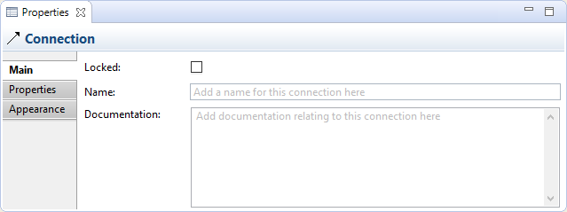
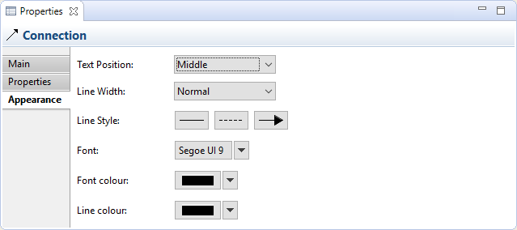

Sélectionner une connexion dans un canevas signifie que vous pouvez modifier ou voir ses propriétés dans la fenêtre des propriétés.
Propriétés
Sélectionner une connexion dans une vue du canevas signifie que vous pouvez modifier ou voir ses propriétés dans la fenêtre des propriétés.
L'onglet principal
Modifier les propriétés "principales" d'une connexion
| Verrouillée: | Sélectionner ceci assure que la connexion ne peut pas être déplacée ou modifiée. |
| Nom: | Le nom de la connexion. S'il est fourni, ceci apparaîtra à côté de la connexion dans la vue. |
| Documentation: | Un endroit où saisir de la documentation utiliusateur en relation avec la connexion |
L'onglet propriétés
Pour plus d'information concernant la création et la gestion des propriétés utilisateurs, voir propriétés utilisateur.
L'onglet apparence
Modifier les propriétés d' "apparence" pour une connexion dans un canevas
| Position du texte: | Définit la position du texte qui apparaîtra près de la ligne sur la vue. Les options sont "Source", "Au milieu" et "Cible". |
| Largeur de la ligne: | Définit la largeur de la ligne de la connexion. Les options sont "Normale", "Moyenne" et "Forte". |
| Style de ligne: | Définit les types des extrêmités à la source et sur la cible des lignes des connexions ainsiqu que le style de la ligne principale. |
| Police de caractères: | Définit la police de caractères utilisée pour le texte de la connexion sélectionnée. Le bouton "Défaut" définit la police de caractères comme étant celle définie par défaut dans les préférences. |
| Couleur de la police de caractères: | Définit la couleur de la police de caractères utilisée pour le texte de la connexion sélectionnée. Le bouton "Défaut" définit la couleur de la police de caractères comme étant celle définie par défaut. |
| Couleur de la ligne: | Définit la couleur de la ligne de la connexion. Le bouton "Défaut" définit la couleur de la ligne comme étant celle de la couleur par défaut. |